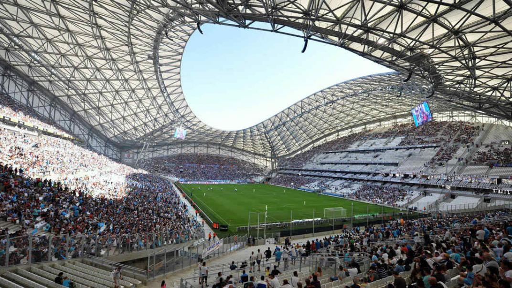
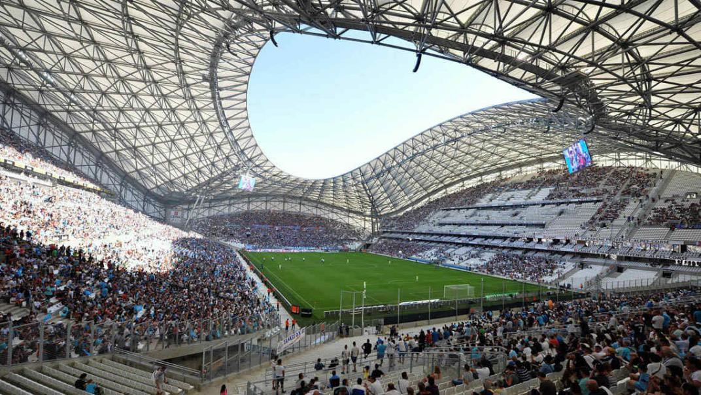
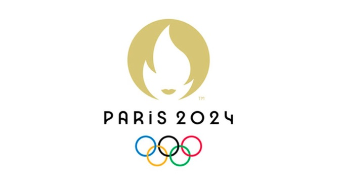

Sedes
| SEDES PRINCIPALES | ||
|---|---|---|
| CIUDAD | ESTADIO | IMAGEN |
| París | Estadio de Francia |

|
| Marseille | Estadio Velodrome |  |
París, la ciudad del amor, se prepara para recibir a los mejores atletas del mundo en un evento que celebrará la unidad y el espíritu deportivo global.
Más de 200 naciones competirán en las Olimpiadas de 2024, mostrando el talento y la diversidad del deporte internacional.
Los Juegos ofrecerán una amplia gama de disciplinas, desde las más tradicionales hasta las más modernas, permitiendo a los atletas brillar en sus especialidades.
| SEDES PRINCIPALES | ||
|---|---|---|
| CIUDAD | ESTADIO | IMAGEN |
| París | Estadio de Francia |
|
| Marseille | Estadio Velodrome |  |
Las Olimpiadas han sido testigos de numerosos momentos históricos y curiosidades a lo largo de los años:
Desde sus inicios en la antigua Grecia hasta convertirse en el evento deportivo más grande del mundo, las Olimpiadas han evolucionado y reflejado los cambios culturales y sociales a lo largo de la historia.
Las Olimpiadas son más que solo competencias; son una celebración de la humanidad, la perseverancia y el esfuerzo colectivo para lograr lo extraordinario.
